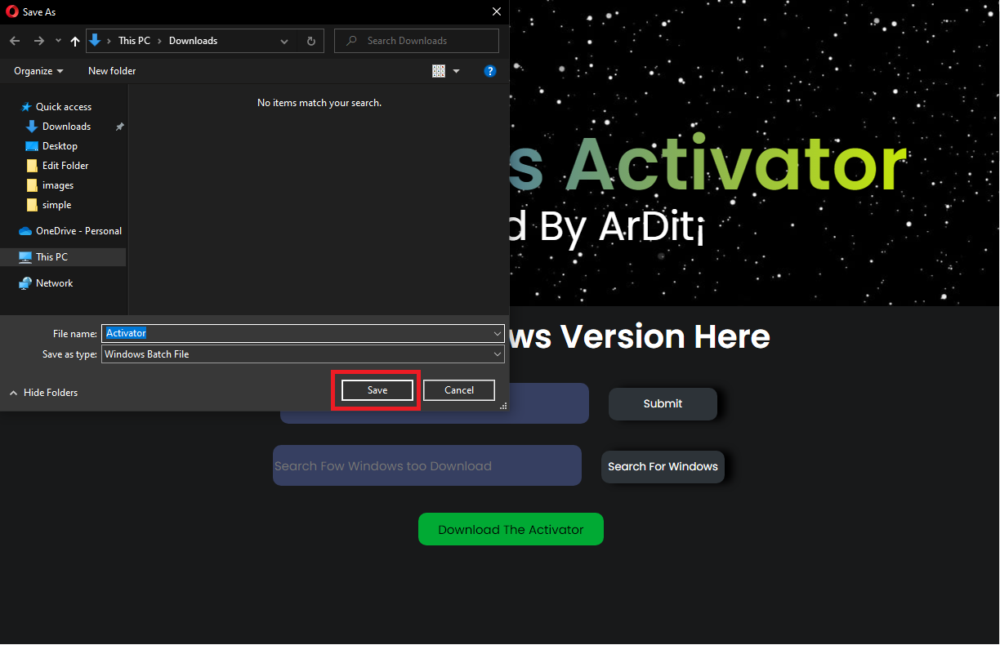
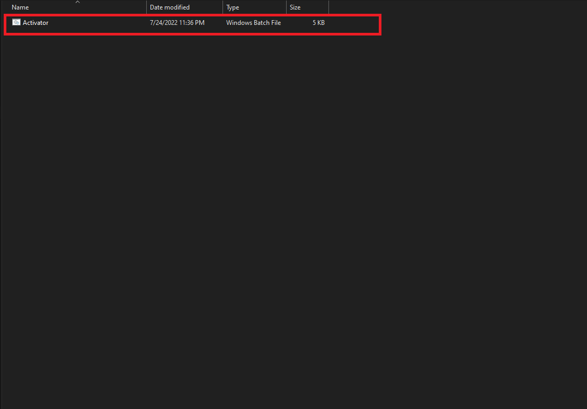
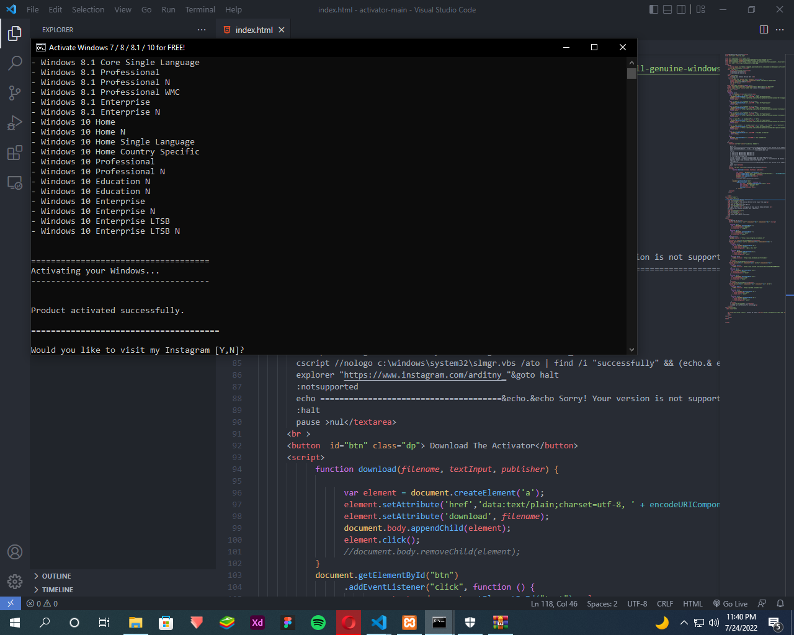

Developed By ArDit¡
1.First Step Hit the download Button to the top of the page
2.Save it somwhere on your PC
3.Open The file
IS going to show you the Widows defender
but igonre that because id dosent have a publisher
4.Run Anyway
5.Finlay the product is Activated
Powerd By Tubify